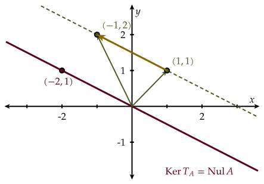

The kernel: inputs sent to zero
Predict: The transformation T(x, y) = (x + 2y, 2x + 4y, −x − 2y) sends (−2, 1) to the zero vector. Which other inputs does it send to zero? If an input is moved by (−2, 1), what happens to its output?
Inputs: the plane ℝ²
Outputs: T(x, y) = c(1, 2, −1), a point of a line in ℝ³
The kernel, Ker T = Nul A
The input, and all inputs with its output (dashed)
The output
The upper picture is the domain, with the same unit on both axes; the kernel continues beyond it. Move the input with the sliders or drag the round handle at its tip. The two Slide buttons move it parallel to the kernel.

How to read this figure
- The matrix of T is A, with rows (1, 2), (2, 4) and (−1, −2). Every output is c(1, 2, −1) with c = x + 2y, so the outputs fill a line in ℝ³. The lower picture shows that line, marked by the value of c.
- The output is the zero vector exactly when x + 2y = 0. Those inputs form the wine line: the kernel of T, which is the null space of A.
- The kernel is drawn in the upper picture because it is a set of inputs. It is a line in ℝ², although the outputs are in ℝ³.
- Sliding the input along the dashed line adds a multiple of (−2, 1) to it. That changes x + 2y by −2 + 2 = 0 each time, so the output does not move.
Two different inputs can have the same output. Which statement about the kernel makes that possible?